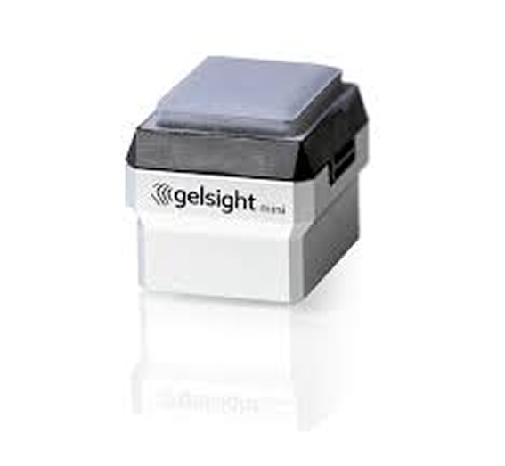
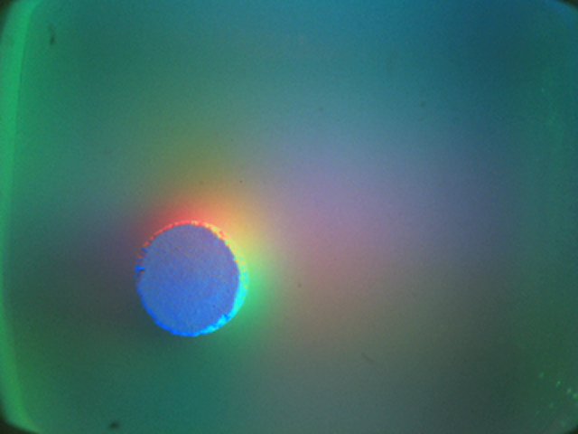

01 · TACTILE SENSORS
触觉传感器
触觉传感器把压力、形变、振动或接触引起的其他物理变化转换为可计算信号。不同机制在柔性、分辨率、频率响应和集成成本之间做出不同取舍。
A
压阻式
Piezoresistive
- 阻值随压力或应变变化
- 电路简单、成本较低
- 存在迟滞与温漂
B
电容式
Capacitive
- 极板间距或面积改变
- 灵敏度高、功耗低
- 易受寄生电容干扰
C
压电式
Piezoelectric
⌁⌁⌁
D
视触觉
Vision-based tactile
- 相机观测弹性体形变
- 空间分辨率高、信息丰富
- 需要处理光学与材料非线性
02 · PRINCIPLE
视触觉的组成原理
下面展示一个典型的视触觉组成与成像原理示例：相机观测柔性介质的接触形变，并通过多方向光照编码表面法向。不同传感器也可能采用标记点、双目视觉或其他光学结构。
 一个典型的视触觉组成与光度立体成像原理示例
一个典型的视触觉组成与光度立体成像原理示例
01接触形变物体压入柔性弹性体，局部表面几何发生变化。
02光学编码不同方向的光照把表面法向编码为颜色与亮度。
03图像采集相机获得高分辨率接触图像或标记点运动。
04物理量恢复通过光度立体、光流或学习模型估计形状与力。
CASE STUDY
GelSight
High-resolution geometry + slip sensing

GELSIGHT SENSOR

TACTILE IMAGE
GelSight 在透明弹性体表面覆盖反射膜，并使用多方向彩色照明。接触图像可通过光度立体恢复微米级表面几何；标记点运动还能用于三维力与初始滑移估计。
03 · HARDWARE
视触觉的基本构成
典型系统由弹性接触层、光学编码、照明、成像和机械外壳组成。下面五类代表工作展示了平面、指尖、无标记、双目与高密度重建等设计路线。
2023SHAPE · 6D FORCE
9DTact
利用半透明凝胶的光学与形变特性，无需辅助标记即可进行三维形状重建与六维力估计。
Paper
Project
2022STEREO · FORCE FIELD
Tac3D
通过虚拟双目视觉恢复三维接触表面、接触力分布，并进一步估计局部摩擦系数。
Paper
2021SHAPE · FORCE · SLIP
GelSlim 3.0
面向夹爪集成的紧凑型手指，同时测量高分辨率形状、三维力分布和初始滑移。
Paper
Code
2020COMPACT · OPEN SOURCE
DIGIT
低成本、紧凑且制造流程可复现，可安装在多指灵巧手上，适合学习型操作研究。
Paper
Code
2022CURVED · DENSE DEPTH
DenseTact
采用鱼眼相机和曲面软凝胶，通过卷积网络实时恢复高密度三维表面形变。
Paper
Code
04 · CALIBRATION & DATA
标定与数据采集流程
标定的目标是建立“图像变化—几何形变—接触力”之间的可重复映射。采集流程必须同时控制接触位置、姿态、深度、速度与外部真值。
- 01
传感器准备
固定曝光、白平衡与光源；采集无接触背景，检查弹性体和标记点状态。
- 02
几何标定
相机内参和畸变校正；用已知球体、平面或压头建立像素到表面坐标的映射。
- 03
光学 / 位移标定
拟合 RGB 强度与表面法向，或检测标记点并计算二维、三维位移场。
- 04
力标定
与六维力传感器同步，覆盖不同位置、方向和载荷，学习形变到力的映射。
- 05
数据集采集
同步保存图像、机器人位姿、力/力矩和标签，并按物体或实验批次划分数据集。
- 06
质量评估
检查重复性、迟滞、漂移和跨位置误差，报告深度、力、接触位置与任务指标。
05 · SIMULATION
触觉仿真
触觉仿真需要同时近似接触力学、软材料形变、光照和成像。它用于低成本数据生成、策略训练、传感器设计与 Sim-to-Real 验证。
PHYSICS接触与形变pose · force · mesh
→
RENDERING光学与成像light · gel · camera
→
LEARNING感知与策略depth · force · action
→
TRANSFER真实机器人calibration · adaptation
2020TACTO
灵活的开源视触觉渲染器，可模拟 DIGIT 与 OmniTact，并连接 PyBullet。
Paper ↗Code ↗
2021Taxim
面向 GelSight 的高速触觉图像模拟，分离几何、光照与标记点运动建模。
Paper ↗
2024TacSL
基于 GPU 的视触觉仿真与学习库，支持高速力分布提取和策略 Sim-to-Real。
Paper ↗Project ↗
2023DiffTactile
面向接触丰富任务的可微分触觉仿真，可联合优化物理参数与控制策略。
Project ↗
06 · DEXTEROUS MANIPULATION
触觉与灵巧操作融合
触觉不是操作后的附加判断，而是闭环策略的一部分。它补充视觉遮挡下的接触状态，并支持滑移检测、握力调节、物体状态估计和手内操作。
Visionshape · pose
Tactilecontact · slip
Proprioceptionjoint · torque
MULTIMODAL
FUSION
State estimation
Policy learning
Closed-loop action
VISUOTACTILE LEARNING · 2021
VTT
Visuo-Tactile Transformer 面向表征学习与机器人操作，将视觉和触觉 token 统一建模。
Read paper ↗
TACTILE-ONLY · 2023
TacGNN
用图神经网络从触觉阵列估计物体状态，并在无视觉条件下完成双球手内操作。
Read paper ↗
SIM-TO-REAL · 2023
In-hand Manipulation
利用触觉接触位置、强化学习和域随机化，实现细长物体连续轨迹控制。
Read paper ↗
BENCHMARK · 2026
TacO
从真实物体操作任务系统比较不同触觉传感原理与感知能力。
Read paper ↗